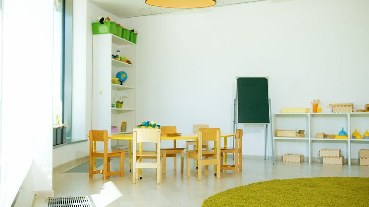
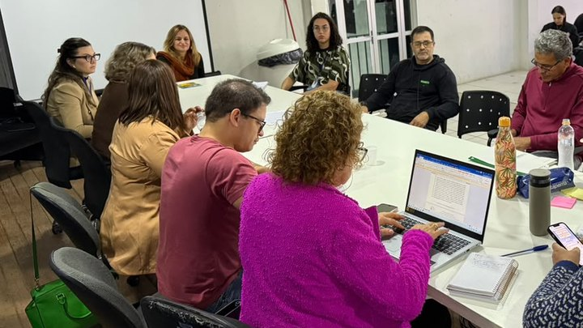
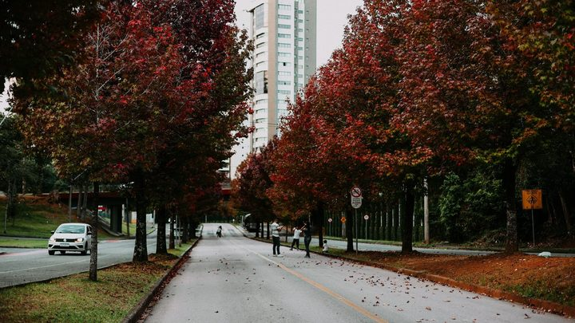

Itajaí · EducaçãoJustiça manda Itajaí zerar a fila da creche em oito meses, e os editais de Itapema não dizem quantas crianças esperam
A matéria que deu origem a esta contagem.
A Secretaria de Educação publicou na quinta-feira a sétima chamada do Fila Única do cadastro de 2026, com 116 crianças convocadas, a menor de todas as sete. Nós abrimos os sete editais do ano, um a um, e somamos 1.567 convocações. Os pais chamados têm hoje, segunda e terça para retirar o encaminhamento de matrícula.
Em 30 segundos · Modo de Leitura, formato original Santa Informa
Saiu a sétima chamada do Fila Única de Itapema.
O Fila Única organiza a vaga de creche.
Atende criança de seis meses a cinco anos.
O edital 07/2026 é de 1º de outubro.
Convoca 116 crianças.
É a menor chamada do ano.
Os pais retiram o encaminhamento em três dias.
Hoje, 2 de outubro, segunda, dia 5, e terça, dia 6.
Das 9h às 12h e das 13h às 17h.
Na Secretaria de Educação.
Rua 906, nº 64, no Alto São Bento.
Leve a certidão de nascimento da criança.
E o documento de identificação do responsável.
Criança com deficiência precisa do laudo médico.
Nós abrimos os sete editais de 2026.
Somados, dão 1.567 convocações.
A primeira chamada, em fevereiro, teve 493.
Depois: 289, 207, 157, 127 e 178.
Agora 116, a menor.
No cadastro de 2025 foram 13 chamadas.
Elas somaram 2.691 convocações.
Nas sete primeiras de 2025 foram 1.511.
Então 2026 está 3,7% acima no mesmo ponto.
A sétima chamada cobre 16 creches.
O CMEI Universo da Criança tem 14 nomes.
O CMEI Paulo Reis tem 1.
Só 3 das 116 são do Grupo 1.
Grupo 1 é o berçário, a turma dos menores.
No ano todo o Grupo 1 teve 183 convocações.
Nenhum edital diz quantas crianças ainda esperam.
A Prefeitura nunca publicou o tamanho da fila.
Poder PúblicoPublicada em Redação Santa Informa
A Secretaria de Educação de Itapema publicou em 1º de outubro a sétima chamada do Fila Única, o sistema que organiza o acesso às vagas de creche e pré-escola da rede municipal, para crianças de seis meses a cinco anos. O edital 07/2026 convoca 116 crianças, e os pais precisam buscar o encaminhamento de matrícula em três dias: hoje, 2 de outubro, na segunda, dia 5, e na terça, dia 6, das 9h às 12h e das 13h às 17h, na Rua 906, nº 64, no Alto São Bento. É preciso levar a certidão de nascimento da criança e o documento de identificação do responsável. Quem tem filho com deficiência precisa levar também o laudo médico.
Cada chamada sai num edital em PDF, e nenhum deles traz o total do ano. Nós baixamos os sete editais de 2026 e contamos nome por nome. Somados, eles dão 1.567 convocações. A sequência cai e depois oscila: 493 na primeira, em 27 de fevereiro, 289 em 7 de abril, 207 em 11 de maio, 157 em 11 de junho, 127 em 29 de julho, 178 em 2 de setembro e 116 agora. É a menor chamada do ano, e também o maior intervalo sem convocação desde julho.
Fizemos a mesma contagem no cadastro anterior. O Fila Única de 2025 teve 13 chamadas, a última publicada já em janeiro de 2026, e elas somaram 2.691 convocações. Comparando o mesmo ponto do percurso, as sete primeiras chamadas de 2025 deram 1.511, contra as 1.567 de agora. São 56 convocações a mais, uma diferença de 3,7%. O ritmo, portanto, é parecido com o do ano passado, e o cadastro de 2025 ainda ganhou seis chamadas depois deste ponto, o que sugere que 2026 não terminou.
As 116 convocações da sétima chamada se espalham por 16 creches. O CMEI Universo da Criança é o que mais chama, com 14, seguido do Branca de Neve, com 12, e do Caminhos do Saber, com 11. Na outra ponta, o CMEI Paulo Reis aparece com um nome só. Por idade, o desenho chama atenção: o Grupo 1, que é o berçário e reúne os menores, tem apenas 3 das 116 vagas. Os grupos 5 e 2, de crianças maiores, levam 27 e 25. No ano inteiro a diferença se mantém: o Grupo 1 soma 183 convocações, contra 311 do Grupo 2 e 303 do Grupo 5. Em 2026, 64 das convocações trazem a marca que o edital usa para criança com deficiência.
O resumo de 30 segundos está no topo e a versão completa é o texto acima. Aqui ficam as três leituras da casa sobre o mesmo assunto.
Clara, a otimista
Mil quinhentas e sessenta e sete convocações em sete chamadas é muita criança entrando na creche. São 1.567 vezes que um telefone tocou e alguém do outro lado disse que a vaga saiu. Para quem estava esperando, isso é o ano inteiro resolvido.
E gostei de ver que a máquina não parou no meio do ano. A chamada de setembro foi maior que a de julho, e esta de outubro veio logo em seguida, com um mês de intervalo. Fila que anda em outubro é fila que ainda tem vaga para dar, e isso não é pouco numa cidade que cresce no ritmo de Itapema.
Seu Prudêncio, o criterioso
Merece atenção o número que não está em lugar nenhum. Sabemos quantos foram chamados, 1.567, porque fomos contar. Não sabemos quantos continuam esperando, porque isso o edital não publica. São dados de naturezas diferentes: um mede o que a Prefeitura entregou, o outro mediria o tamanho do problema. Sem o segundo, o primeiro fica sem régua.
Vale acompanhar também a conta do berçário. Três convocações para o Grupo 1 numa chamada de 116 é uma proporção que destoa, e no ano inteiro o Grupo 1 fica bem atrás dos demais. Pode ter explicação simples, vaga de berçário custa mais caro porque exige mais adulto por criança, e pode ser que a turma já esteja completa. Uma sugestão útil para quem está nessa situação: ligar no (47) 3267-1400, ramal 1605, e perguntar a posição, porque o sistema fica aberto o ano todo e a inscrição pode ser ajustada.
Dito isso, reconheço o que está bem feito. O edital sai em PDF, fica no site, traz a turma, o período e a unidade de cada criança, e protege o nome do menor usando só as iniciais. A data de cada chamada está no documento, o prazo de retirada vem escrito e o telefone de dúvida está publicado. É material público conferível, e foi justamente por isso que esta contagem foi possível. Muita prefeitura não deixa nem chegar perto disso.
Caco, o sarcástico
Itapema publica sete editais, cada um com dezenas de nomes, todos em PDF, e não publica em lugar nenhum a soma. É como receber o extrato do banco sem o saldo. Está tudo lá, basta você passar a manhã somando.
Então foi o que a gente fez. Deu 1.567. De nada.
Agora o lado bom, e tem: a informação existe, está no ar, com data, carimbo e iniciais no lugar do nome da criança. Dá trabalho juntar, mas dá para juntar. Tem cidade por aí onde a fila da creche é um boato que todo mundo comenta no mercado e ninguém nunca viu escrito. Aqui está escrito. Falta só a Prefeitura fazer a conta antes da gente.
Fontes: a data da sétima chamada, os três dias de retirada, o horário, o endereço da Secretaria de Educação, os documentos exigidos e o telefone estão na nota Educação divulga sétima chamada dos contemplados do Fila Única inscritos em 2026, publicada pela Prefeitura de Itapema em 1º de outubro de 2026, de onde saiu também a foto do topo. A contagem das convocações é levantamento nosso, feito nome por nome nos editais publicados na página Chamada Fila Única da Prefeitura: os sete de 2026, do edital 001/2026 ao edital 007/2026, e os treze do cadastro de 2025, do edital 001/2025 ao edital 013/2025, todos conferidos nesta sexta-feira. A equivalência entre os grupos e as turmas antigas, com Grupo 1 para o berçário e Grupo 6 para o pré, está escrita no próprio edital 001/2025. A faixa de seis meses a cinco anos e o funcionamento do cadastro estão na nota Inscrições para o Fila Única 2026 abrem na madrugada deste sábado para domingo. O histórico do assunto está na nossa matéria Justiça manda Itajaí zerar a fila da creche em oito meses, e os editais de Itapema não dizem quantas crianças esperam, de 11 de setembro de 2026.

Itajaí · EducaçãoA matéria que deu origem a esta contagem.

Itapema · Poder PúblicoO dinheiro que a cidade reserva para a infância.

Itapema · Meio AmbienteOutro número que só aparece quando alguém junta.